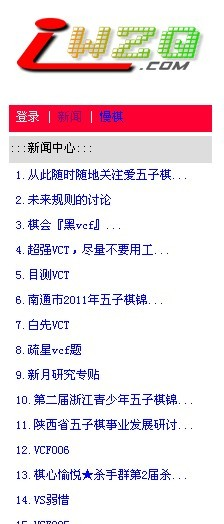

从此随时随地关注爱五子棋----爱五子棋手机版发布
首页
站务管理
#1 从此随时随地关注爱五子棋----爱五子棋手机版发布 作者：小丸.net 发表时间：2011-5-29 22:28:56
经过一段时间的调试，爱五子棋手机WAP版发布。
手机访问地址：www.iwzq.com/wap.asp

爱五子棋手机版目前功能：
1.可以看到基础版块的贴子
2.可以看到最新版贴子
3.可以看到贴子中的回贴
本网页仅支持可以访问WAP网页的手机，最佳屏幕尺寸不小于240*320.
友情提醒：使用手机会产生流量，从而产生一定的费用！
［此帖子已被 小丸.net 在 2011-5-29 22:30:48 编辑过］
［此帖子已被 小丸.net 在 2011-5-29 22:34:59 编辑过］
#2 Re:从此随时随地关注爱五子棋----爱五子棋手机版发布 作者：有志青年 发表时间：2011-5-30 6:54:28
可以随时看论坛战是个特色
#3 Re:从此随时随地关注爱五子棋----爱五子棋手机版发布 作者：松痕 发表时间：2011-5-30 7:40:21
功臣
#4 Re:从此随时随地关注爱五子棋----爱五子棋手机版发布 作者：梧桐风 发表时间：2011-5-30 7:40:38
话说平常也可以用手机上爱五子棋网呀~经常用手机上爱网~
#5 Re:从此随时随地关注爱五子棋----爱五子棋手机版发布 作者：安娜制作所 发表时间：2011-5-30 8:50:48
好用
#6 Re:从此随时随地关注爱五子棋----爱五子棋手机版发布 作者：飞飞 发表时间：2011-5-30 9:17:03
恩恩 好的，谢谢啊。
#7 Re:从此随时随地关注爱五子棋----爱五子棋手机版发布 作者：隐藏菜系 发表时间：2011-5-30 12:46:23
福音啊…太感动了~看坐标查数子的日子终于要结束了！
#8 Re:从此随时随地关注爱五子棋----爱五子棋手机版发布 作者：简枫残雪 发表时间：2011-5-30 16:20:38
以前就经常用手机看的，
#9 Re:从此随时随地关注爱五子棋----爱五子棋手机版发布 作者：小道 发表时间：2011-5-30 20:40:46
看来不错啊！试试看
#10 Re:从此随时随地关注爱五子棋----爱五子棋手机版发布 作者：岳麓小棋后 发表时间：2011-6-12 19:46:50
试了下，手机版目前不能登陆、回复，个别帖子帖数过多点击会提示手机内存不够，建议长帖子分页数！！
#11 Re:从此随时随地关注爱五子棋----爱五子棋手机版发布 作者：五竹 发表时间：2011-6-12 22:22:45
我现在就是用手机回复这个帖的。
#12 Re:从此随时随地关注爱五子棋----爱五子棋手机版发布 作者：岳麓小棋后 发表时间：2011-6-13 18:52:21
咦,难道跟手机有关?
#13 Re:从此随时随地关注爱五子棋----爱五子棋手机版发布 作者：维尔斯特拉斯 发表时间：2011-6-13 19:48:30

#14 Re:从此随时随地关注爱五子棋----爱五子棋手机版发布 作者：五竹 发表时间：2011-6-13 22:14:05
我是直接登www.awzq.com的。